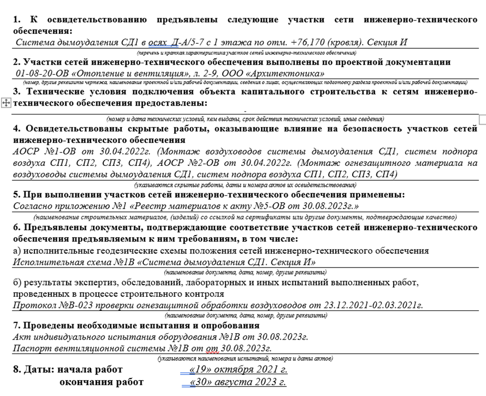
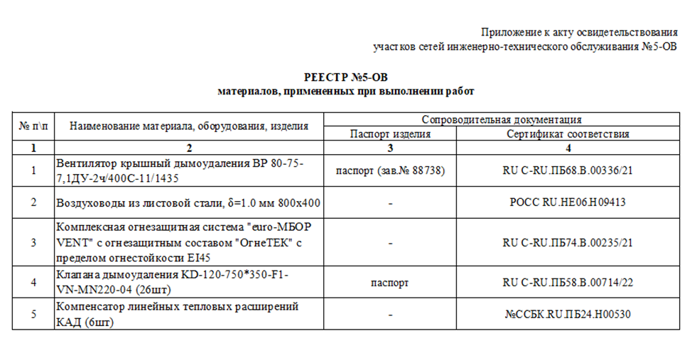
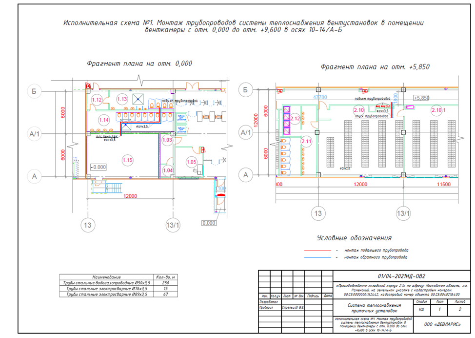
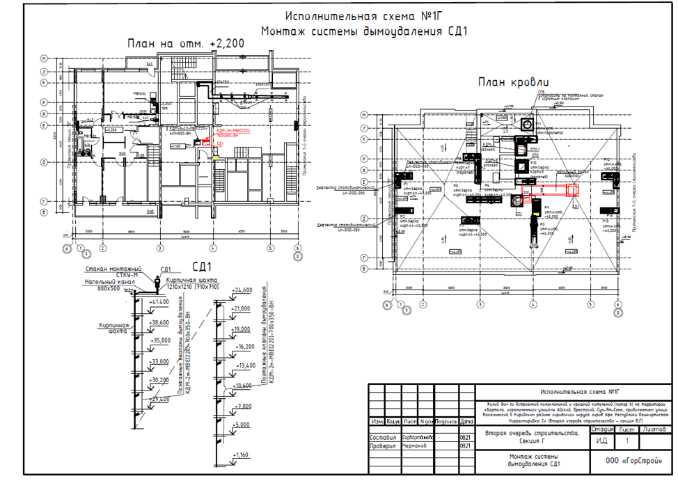
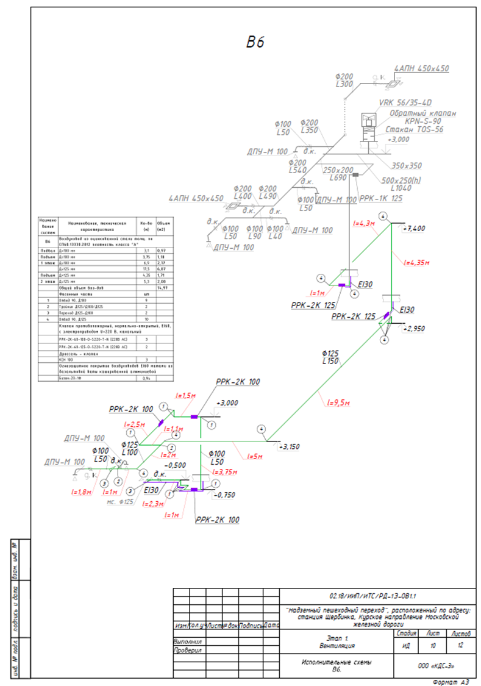
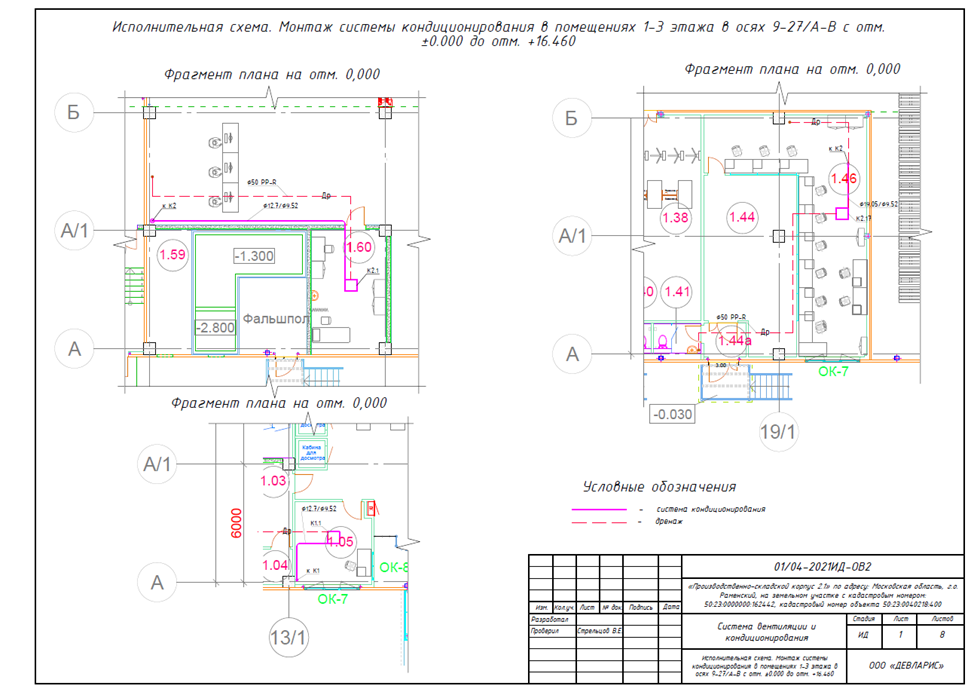

Состав ИД на раздел ОВ

Состав ИД регламентируется приказом Минстроя №344/пр от 16 мая 2023 г. При этом необходимо учитывать требования нормативно-технических документов по определенным видам работ, которые также могут иметь требования к составу ИД.
№ п/п | Наименование документа | Ссылка на нормативный документ | Примечание | |
|---|---|---|---|---|
1 | Реестр исполнительной документации | Форма не регламентирована. Можно использовать форму по ВСН 012-88, ч.2, форма 1.2 | Форма м.б. установлена заказчиком | |
2 | Комплект рабочих чертежей с надписями о соответствии выполненных в натуре работ этим чертежам, сделанными лицами, ответственными за производство строительно-монтажных работ | Приказ Минстроя №344/пр п.7 |
| |
3 | Журналы | |||
3.1 | Общий журнал работ | Приказ Минстроя №1026/пр от 02.12.2022 |
| |
3.2 | Журнал верификации закупленной продукции или Журнал входного учета и контроля качества получаемых деталей, материалов, конструкций и оборудования | ГОСТ 24297-2013 приложение А или СП 48.13330.2019 приложение И |
| |
3.3 | Журнал сварочных работ | Приложение Б СП 70.13330.2012 | Могут потребовать при проведении сварочных работ (например, монтаж стальных труб). | |
3.4 | Журнал антикоррозийной защиты сварных соединений | Приложение В СП 70.13330.2012 | -//- | |
3.5 | Журнал производства антикоррозионных работ | Приложение Г СП 72.13330.2016 | При наличии соответствующих работ в РД (например, покраска стальных труб) | |
4 | Акты освидетельствования скрытых работ (АОСР) | Приказ Минстроя №344/пр | ||
4.1 | АОСР на обезжиривание поверхности трубопроводов перед покраской | Для стальных труб (при наличии в РД) | ||
4.2 | АОСР на огрунтовку трубопроводов | Для стальных труб (при наличии в РД) | ||
4.3 | АОСР на покраску трубопроводов | Для стальных труб. На каждый слой | ||
4.4 | АОСР на устройство проходов труб через стены и перекрытия | - пробивка отверстий - установка гильз | ||
4.5 | АОСР на монтаж трубопроводов систем отопления / теплоснабжения |
| ||
4.6 | АОСР на монтаж теплоизоляционного материала на трубопроводы | |||
4.7 | АОСР на герметизацию (заделку) мест проходов через стены и перекрытия | |||
4.8 | АОСР на устройство теплового пола | |||
5 | Акт освидетельствования участков сетей инженерно-технического обеспечения | |||
5.1 | Акт освидетельствования участков сетей инженерно-технического обеспечения | Приказ Минстроя №344/пр | Составляется на законченную систему в целом (с указанием всех элементов, как в спецификации) | |
6 | Акты испытания технических устройств и опробования систем инженерно-технического обеспечения | |||
6.1 | Акт гидростастатического или манометрического испытания на герметичность | СП 73.13330.2016 приложение В | Акт «опрессовки» Оформляется на участок трубопровода или систему в целом | |
6.2 | Акт промывки (продувки) системы | СП 347.1325800.2017 приложение Е |
| |
6.3 | Акт индивидуального испытания оборудования | СП 347.1325800.2017 приложение В | Например, на тепловые завесы воздушного отопления | |
6.4 | Акт приемки внутренней системы отопления | СП 347.1325800.2017 приложение Г | ||
6.5 | Акт теплового испытания системы центрального отопления на эффект действия | Справочное пособие ЦКС раздел V (рекомендуемая форма) | При участии представителя эксплуатационной организации | |
7 | Исполнительные схемы | |||
7.1 | Схема системы отопления / теплоснабжения | ГОСТ Р 51872-2024 | - поэтажные схемы с указанием отклонений (при наличии) - аксонометрические схемы с указанием отклонений (при наличии) | |
8 | Документы, подтверждающие проведение контроля за качеством | |||
8.1 | Сертификаты/паспорта качества на используемые материалы | Приказ Минстроя №344/пр |
| |
8.2 | Инструкции по эксплуатации на оборудование |
|
| |
8.3 | Паспорта/гарантийные талоны на оборудование |
| Оригиналы | |
8.4 | Акты входного контроля материалов |
| По требованию. Форма акта общими нормами не регламентирована. | |
9 | Прочие документы | |||
9.1 | Ведомость смонтированных материалов и оборудования | Форма не регламентирована | По требованию. Составляется на основе спецификации к проекту. | |
9.2 | Ведомость смонтированных технических средств автоматизации | СП 77.13330.2016 Приложение А.21 | При наличии систем автоматизации | |
9.3 | Акт приемки систем автоматизации в эксплуатацию | СП 77.13330.2016 Приложение А.22 или А.23 (при сдаче отдельных систем) | При наличии систем автоматизации |
№ п/п | Наименование документа | Ссылка на нормативный документ | Примечание |
|---|---|---|---|
1 | Реестр исполнительной документации | Форма не регламентирована. Можно использовать форму по ВСН 012-88, ч.2, форма 1.2 | Форма м.б. установлена заказчиком |
2 | Комплект рабочих чертежей с надписями о соответствии выполненных в натуре работ этим чертежам, сделанными лицами, ответственными за производство строительно-монтажных работ | Приказ Минстроя №344/пр п.7 |
|
3 | Журналы | ||
3.1 | Общий журнал работ | Приказ Минстроя №1026/пр от 02.12.2022 |
|
3.2 | Журнал верификации закупленной продукции или Журнал входного учета и контроля качества получаемых деталей, материалов, конструкций и оборудования | ГОСТ 24297-2013 приложение А или СП 48.13330.2019 приложение И |
|
4 | Акты освидетельствования скрытых работ (АОСР) | Приказ Минстроя №344/пр | |
4.1 | АОСР на монтаж воздуховодов систем вентиляции | В материалах также прописываются крепления | |
4.2 | АОСР на теплоизоляцию/огнезащиту воздуховодов систем вентиляции | ||
4.3 | АОСР на монтаж трубопроводов (фреонопроводов) систем кондиционирования | ||
4.4 | АОСР на монтаж теплоизоляции на трубопроводы систем кондиционирования | Можно совместить с монтажом труб (т.е. «монтаж трубопроводов систем кондиционирования в теплоизоляции») | |
4.5 | АОСР на монтаж дренажных трубопроводов систем кондиционирования | ||
4.6 | АОСР на монтаж межблочного кабеля систем кондиционирования | ||
4.7 | АОСР на устройство проходов труб через в стены и перекрытия | - пробивка отверстий - установка гильз | |
4.8 | АОСР на герметизацию (заделку) мест проходов через стены и перекрытия | ||
4.9 | АОСР на монтаж лотков для прокладки трубопроводов | При наличии | |
5 | Акт освидетельствования участков сетей инженерно-технического обеспечения | ||
5.1 | Акт освидетельствования участков сетей инженерно-технического обеспечения | Приказ Минстроя №344/пр | Составляется на законченную систему в целом (с указанием всех элементов, как в спецификации) |
6 | Акты испытания технических устройств и опробования систем инженерно-технического обеспечения | ||
6.1 | Акт гидростастатического или манометрического испытания на герметичность | СП 73.13330.2016 приложение В | Акт «опрессовки» На трубы систем кондиционирования |
6.2 | Акт индивидуального испытания оборудования | СП 347.1325800.2017 приложение В | Вентиляторы, кондиционеры, клапаны и др. Рекомендуется оформлять на каждую систему отдельно |
6.3 | Паспорт системы вентиляции (системы кондиционирования воздуха) | СП 73.13330.2016 приложение Д | На каждую систему |
6.4 | Акт технической готовности систем | Пособие к СНиП 3.05.01-85 приложение 14 | Оформляем по требованию, форма рекомендуемая |
6.5 | Акт об окончании пусконаладочных работ | Форма свободная. Можно использовать форму по приложению 14 РД 78.145-93 (для систем ОПС) | Обязательных требований для оформления нет |
6.6 | Технический отчет по испытаниям систем вентиляции | Форма свободная | Содержит пояснительную записку по описанию систем, паспорта систем вентиляции, схемы |
6.7 | Протокол испытания огнезащитного материала | Выдает лаборатория. Проводим по требованию заказчика | |
7 | Исполнительные схемы | ||
7.1 | Схема систем вентиляции/кондиционирования | ГОСТ Р 51872-2024 | - поэтажные схемы с указанием отклонений (при наличии) - аксонометрические схемы с указанием отклонений (при наличии) |
8 | Документы, подтверждающие проведение контроля за качеством | ||
8.1 | Сертификаты/паспорта качества на используемые материалы | Приказ Минстроя №344/пр |
|
8.2 | Паспорта, гарантийные талоны, инструкции по эксплуатации на оборудование |
| Оригиналы |
Некоторые правила по оформлению документов
- Акты скрытых работ можно оформлять по выполненным участкам (например, «монтаж трубопроводов системы отопления на 1 этаже» или «монтаж стояков Ст.1, Ст.2 в осях А/12-13 системы отопления с отм. -0,300 по отм. +15,900») или на каждую систему (например, «монтаж труб системы теплоснабжения Т11, Т12 на отм. -2,500 до отм. -0,100»).
- В АОСР на монтаж труб можно указывать запорную арматуру, крепежи, при этом оборудование (например, радиаторы) указывать не нужно.
- Пример оформления АОУСИТО (фрагмент):

Пояснения к оформлению АОУСИТО:
В п. 1 указывается наименование системы с привязками (оси, отметки).
П. 3 заполняется в том случае, если имеются тех.условия. Они могут быть приложены к комплекте РД.
В п. 4 вписываются все АОСРы, имеющие отношение к данной системе.
В п.5 указываются все материалы, оборудование, изделия, которые применялись при монтаже данной системы. Если материалов более пяти штук, то можно вынести данные в отдельное приложение к акту (реестр материалов). Смотри пример реестра материалов ниже.

4. Примеры оформления исполнительных схем:



Примечание: при оформлении аксонометрической схемы системы от заказчика могут быть требования по указанию длин участок воздуховодов/трубопроводов, нумерации каждого элемента и отображении ведомости объемов работ. Если таких требований от заказчика нет, то это делать необязательно (но, если сделать, сдать ИД будет проще).

Примечание на 24.09.2026. Пункт 5 Порядка ведения ИД по приказу Минстроя № 344/пр изменён приказом № 369/пр с 01.03.2026. Перед применением изложенных здесь требований сверьте актуальную редакцию: приказ № 344/пр, изменение № 369/пр. Исходный учебный текст не изменён.
{kind=link}
{kind=link}
{kind=link}
{kind=link}
{kind=link}
{kind=link}